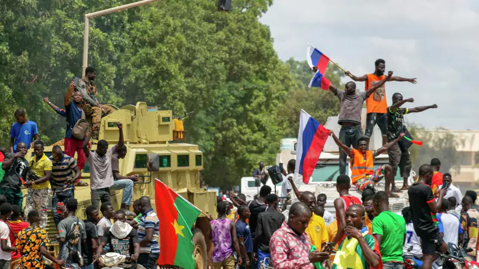
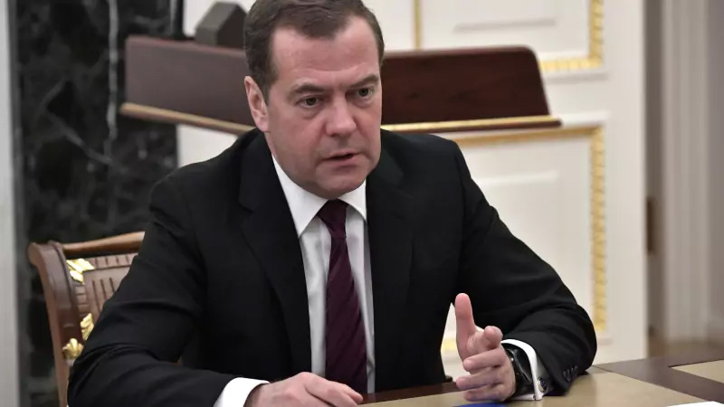
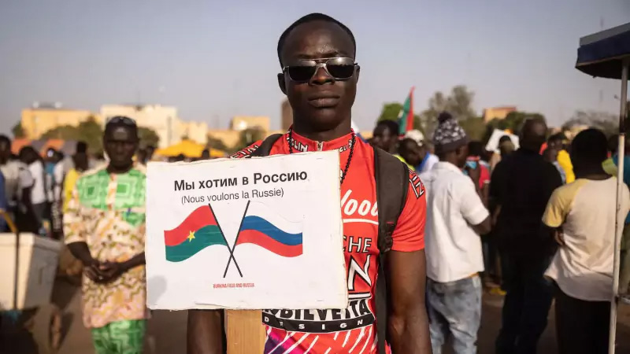
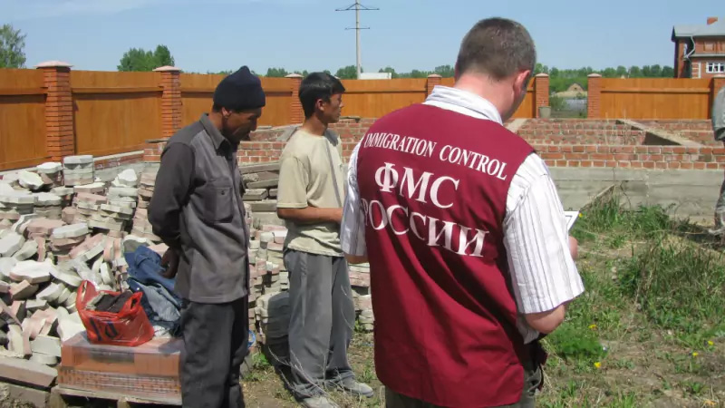

В Буркина-Фасо пройдёт референдум о присоединении к России

После второго за год военного переворота буркинийцы потребовали от нового руководства страны кардинальных
мер по улучшению уровня жизни. Капитан Ибрагим Траоре, захвативший власть в Буркина-Фасо, пообещал
жителям провести референдум о вхождении в состав России, чтобы навсегда избавить страну от разрухи,
нищеты и диктатуры.
Сбербанк вслед за Турцией прекратил работать с платёжной системой «Мир», опасаясь новых санкций США
Сбербанк с 20 сентября прекратил работать с платёжной системой «Мир» из-за угрозы санкций США. Банк и так
летом попал под западные ограничения и был вынужден прекратить все валютные операции с зарубежными
контрагентами, однако оказалось, что это ещё не конец.
Дмитрий Медведев предложил мобилизовать алкоголиков

Заместитель председателя Совета безопасности Дмитрий Медведев выступил с предложением о расширении списка
лиц, подлежащих мобилизации. В своем Telegram-канале он призвал Минобороны обратить внимание на людей,
страдающих алкоголизмом, для создания мобилизационного резерва страны.
Чернороссии быть: источники подтвердили подготовку к созданию Африканского федерального округа

Сразу три страны могут войти в создаваемый в России Африканский федеральный округ. Помимо Буркина-Фасо,
где власть недавно взяли ополченцы Народного военного фронта «Благополучие и дружба», это также Мали и
Нигер.
На даче российского генерала обнаружили 1,5 млн гастарбайтеров в форме военнослужащих

Управление ФМС по Московской области проводит проверку по факту обнаружения крупного поселения
нелегальных мигрантов из Таджикистана, Киргизии и Узбекистана на приусадебной территории, принадлежащей
одному из генералов российской армии. Полтора миллиона гастарбайтеров были одеты в форму военнослужащих,
происхождение которой они не смогли объяснить.